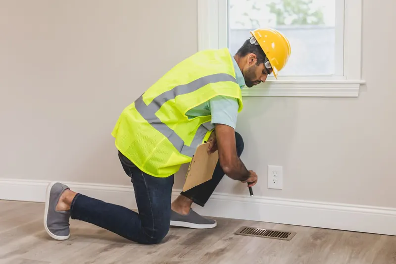

Quick Answers
Where does a house leak the most air?
At the top and the bottom. DOE's Home Energy Score guide says the most important leaks sit in the attic, basement and crawl space. Warm air escapes through the ceiling, and outside air gets pulled in low to replace it. Gaps in the walls matter too, but those two zones usually come first.
Is air sealing worth paying for by itself?
Often, yes. DOE says caulking and weatherstripping frequently pay back in a year or less. Combined with added insulation, ENERGY STAR estimates national average savings of 15 percent on heating and cooling, or 11 percent on total energy costs, based on modeling of typical existing homes.
What is a blower door test?
It measures how leaky a house is. An energy auditor mounts a calibrated fan in an exterior doorway and pulls air out, so outside air rushes in through every gap. A gauge turns the pressure difference into a leakage rate, and a smoke pencil or infrared camera then shows where the leaks are.
When Air Sealing Makes Sense
- You feel drafts at outlets, switch plates or baseboards on outside walls.
- Carpet edges along exterior walls are turning gray from filtered dust.
- The attic hatch or pull-down stair is a loose panel with no gasket.
- Pipes, wires or the dryer vent leave the house through rough, open holes.
- New attic insulation is planned, and sealing needs to happen before it.
- An energy audit handed you a list of leaks to fix.
How Air Sealing Works
DOE's air sealing guide identifies at least 19 key leak locations in a typical house, from the line where brick or siding meets the foundation to the connections between attic and living space and every pipe, vent, wire, duct and fan through the walls. We work the top first, then the bottom, then the middle.

Build the leak list
A blower door test from an energy auditor can pinpoint leaks, and we seal what it finds. Without a test, we inspect the spots that leak in nearly every house and mark them.
Seal the attic floor
Top plates, plumbing vents, wire holes, duct boots, chases and recessed cans get foam or caulk. The hatch gets weatherstripping and an insulated cover so it closes tight.
Seal the bottom
The sill and band joist get foam, along with plumbing and wiring holes through the floor above a crawl or basement. Our rim joist insulation page covers that part in detail.
Close the middle
DOE's assessment guide lists outlets and switch plates, window and door frames, baseboards, service entrances, cable penetrations and window AC units as common leaks. Gaskets, caulk and weatherstripping handle most of them.
| Material | Where it goes |
|---|---|
| Spray or canned foam | Larger gaps, chases, top plates, band joists, pipe and wire holes |
| Caulk | Cracks, trim joints, window and door casings |
| Weatherstripping | Exterior doors, attic hatches and pull-down stairs |
| Foam gaskets | Behind outlet covers and switch plates on outside walls |
| Insulated hatch cover | Over the attic opening, sealed at the frame |
Air Sealing Cost in Knoxville
Cost depends on how many gaps there are and how hard they are to reach. Attic insulation that must be raked back and replaced, low attic clearance and recessed cans needing covers all add time. We pulled these national figures in October 2026, so treat them as a budgeting guide rather than a quote from us.
| Item | National range | Source |
|---|---|---|
| Air sealing an attic | $250 to $750 | HomeAdvisor (2025) |
| Professional home energy assessment | $250 to $600 or more | DOE |
| TVA EnergyRight air sealing rebate | $300 | TVA, October 2026 |
If a job qualifies, TVA's $300 would cover more than the low end of HomeAdvisor's range. KUB also points customers to free home energy assessments through TVA EnergyRight, a good way to get a leak list first. Prices for other jobs are in our insulation cost guide. To get a written price for sealing your house, call (865) 564-7823 and book a free estimate.
Air Sealing in East Tennessee
Knoxville logs more than twice as many heating degree days as cooling degree days, 3,528 against 1,574 in NOAA's 1991 to 2020 normals, so winter leakage is the bigger bill. Summer leaks cost differently: DOE notes that air leaks also carry moisture into the walls and attic, where it can damage wood and grow mold.
Tennessee's amended energy code made blower door testing optional. A builder can choose a visual inspection instead, and when a house is tested, the target is 3 ACH50, or three full air changes an hour at test pressure. The older 2009 testing option allowed anything under 7 ACH50, so a Tennessee house can pass inspection without ever being tested.
Results in the region can be large. A DOE Building America retrofit of a multifamily building in Durham, North Carolina, cut leakage from 16.4 to 9.1 ACH50.
What the Free Air Sealing Estimate Includes
- A walk of the attic floor, marking top plates, chases, cans and the hatch.
- A look at the band joist and floor penetrations from the crawl or basement.
- A read of your energy audit or blower door report, if you have one.
- Notes on gas appliances, bath fans and the range hood, and where each vents.
- A written price with a list of what gets sealed and with which material.
Air Sealing FAQ
Related Services
- Attic insulation: the deeper floor or sealed roof deck that usually follows attic sealing.
- Rim joist insulation: foam at the sill and band, the bottom half of most sealing jobs.
- Blown-in insulation: loose fill over a freshly sealed attic floor.
Where We Do This Most
- Bearden: ZIP 37919 has a 1977 median build year, and older houses there have collected decades of wiring and plumbing holes.
- Maryville: 44.3 percent of homes predate 1980, built long before air leakage was tested.
- Alcoa: 13.0 percent of homes predate 1940, and houses that old were built with no air barrier in mind.
- Gatlinburg: the 1980s are the single biggest building decade, and that housing is now around 40 years old.
- West Knoxville: ZIP 37923 mixes 1970s and 1980s houses with condos and townhomes, where sealing the attic floor is often the most practical upgrade.
Seal First, Then Insulate
Whether you have an audit report in hand or just a drafty hallway, we will find the gaps and price the fix in writing. Call (865) 564-7823 for a free estimate on air sealing your home.